Kiarash Farahmandrad
Multi-disciplinary designer · Tehran, Iran
I work across identity, typography, 3D, motion, and digital experiences, moving between mediums to find the right form for an idea. I'm interested in the space where disciplines overlap, where a graphic can become an object, a typeface can become an environment, and a visual identity can become something you can interact with. I like to start while an idea is still soft, and shape it with you rather than hand it back finished. Most things start as an experiment, and usually end somewhere no one expects.
Skills
DISCIPLINES
Logo Design, Poster Design, 3D Design, UI/UX Design, XR Experience Design
SOFTWARE
Adobe Photoshop, Adobe Illustrator, Adobe InDesign, Adobe Premiere Pro, Adobe After Effects, Figma, Blender 3D, Cinema 4D
ALSO
Creative Coding, AI Visualization, Photography, Teaching
Selected work
LOGOS — MARKS & IDENTITY
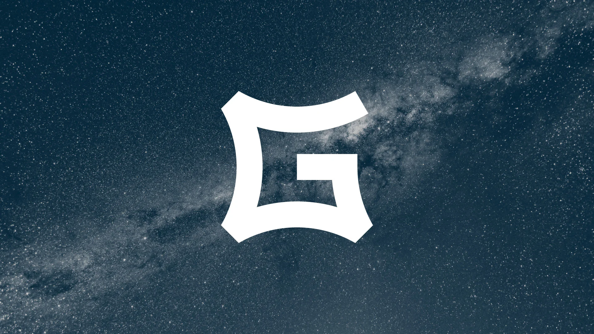
GRAVITAS+ — Gravitas+, 2026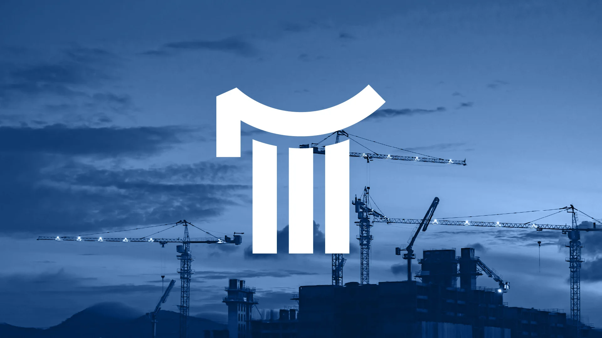
ARCHA — Archa, 2025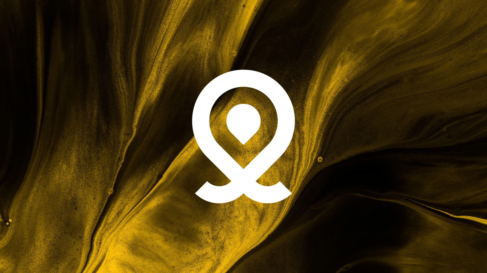
LATENT SPACE — Latent Space, 2024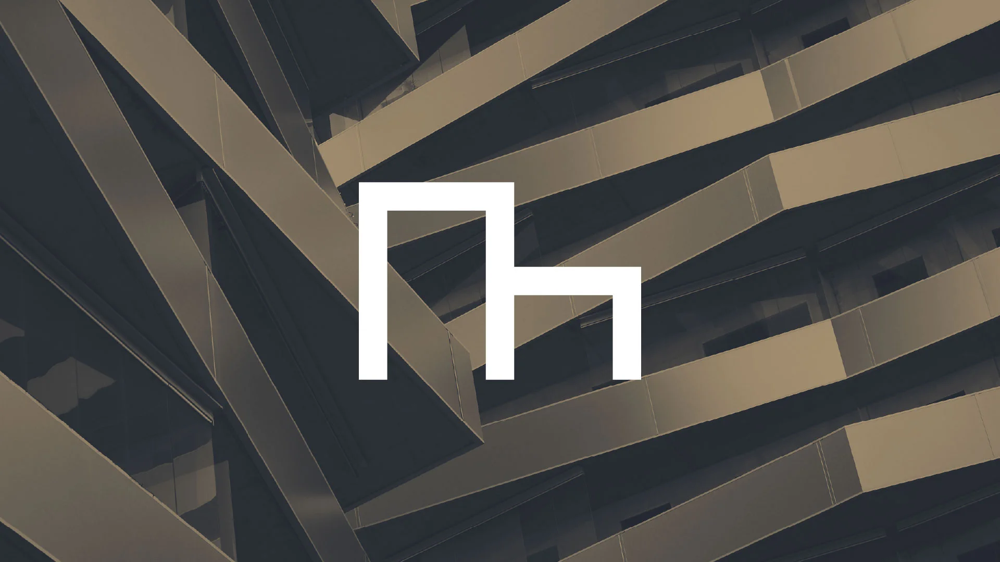
MOKHTARZADE — Mokhtarzade Construction Company, 2024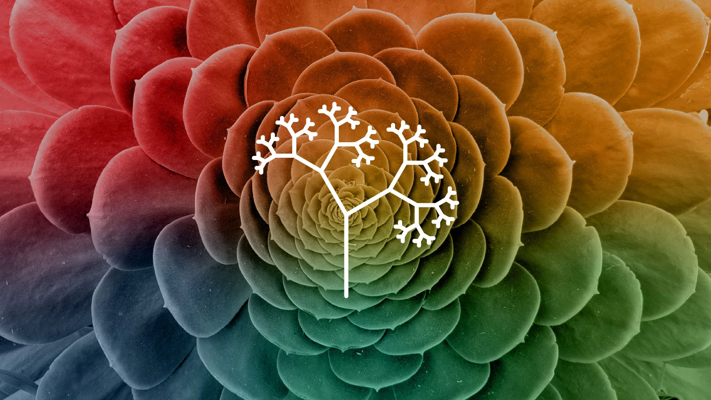
RUSHIN — Rushin, 2024- XENSE — Xense, 2024
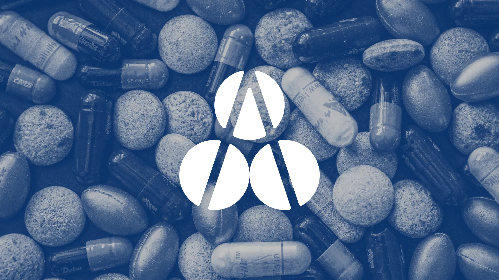
AETHERA — Aethera, 2023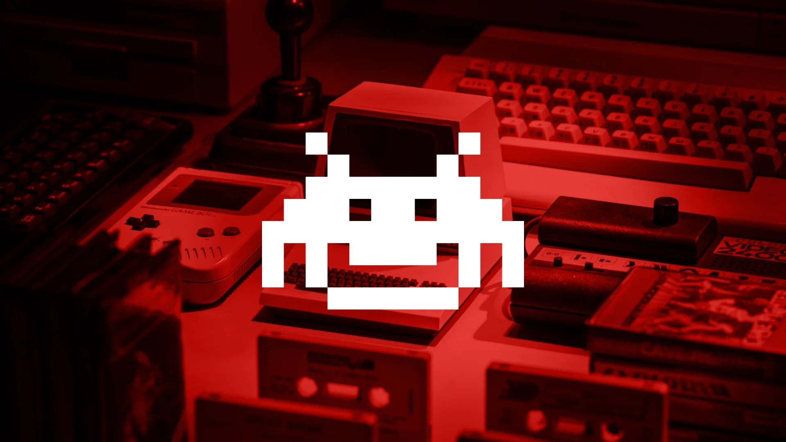
TROID — Troid, 2023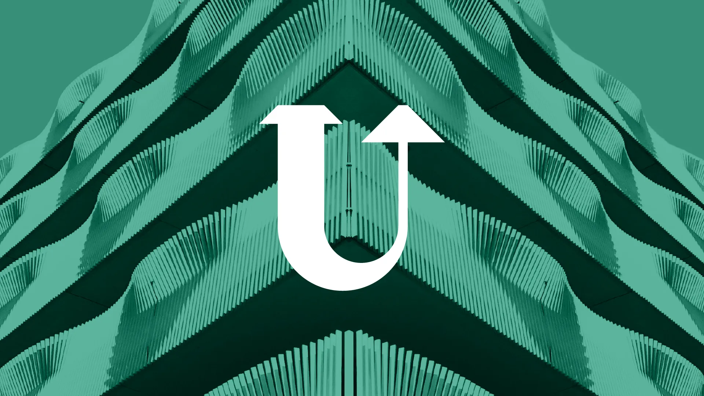
UPZONE — UpZone, 2023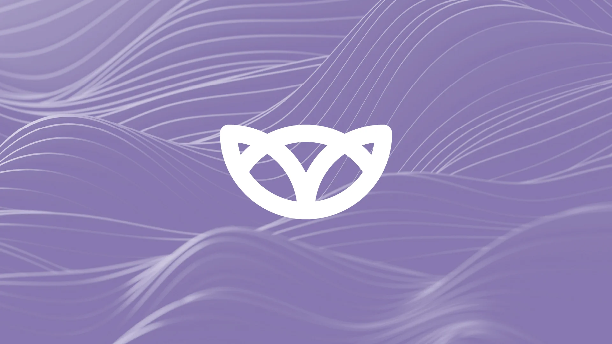
WILLOW — Willow Beauty, 2023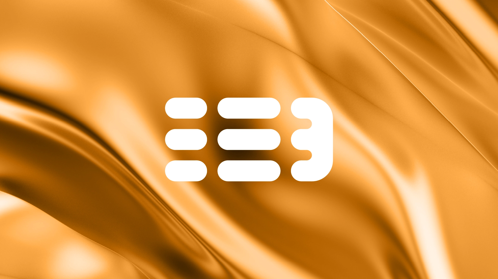
THREEPTYCH STUDIO — Threeptych Studio, 2022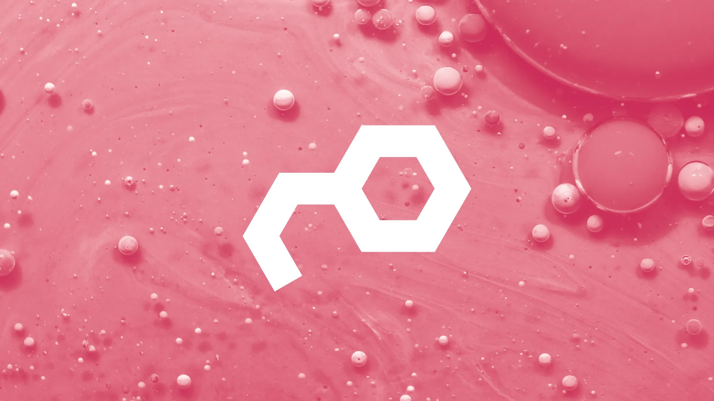
MOLKO — Molko, 2021
POSTERS — PRINT & EDITORIAL
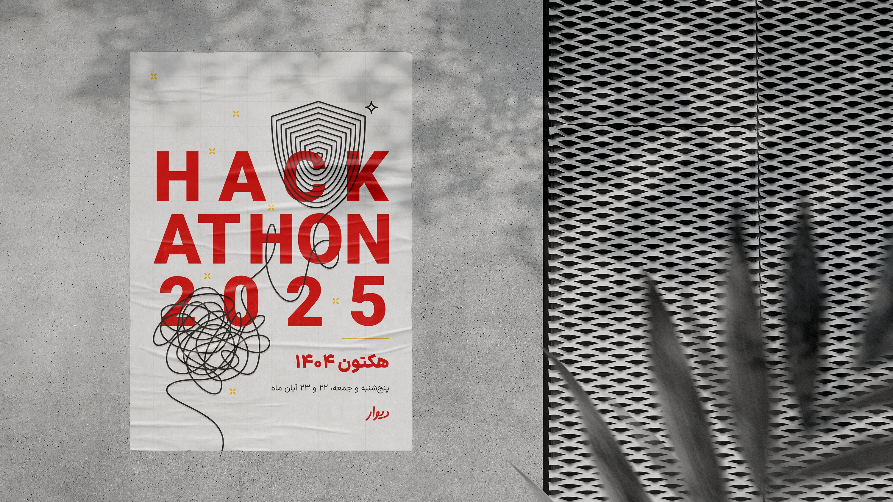
DIVAR'S HACKATHON 2025 — Divar, 2025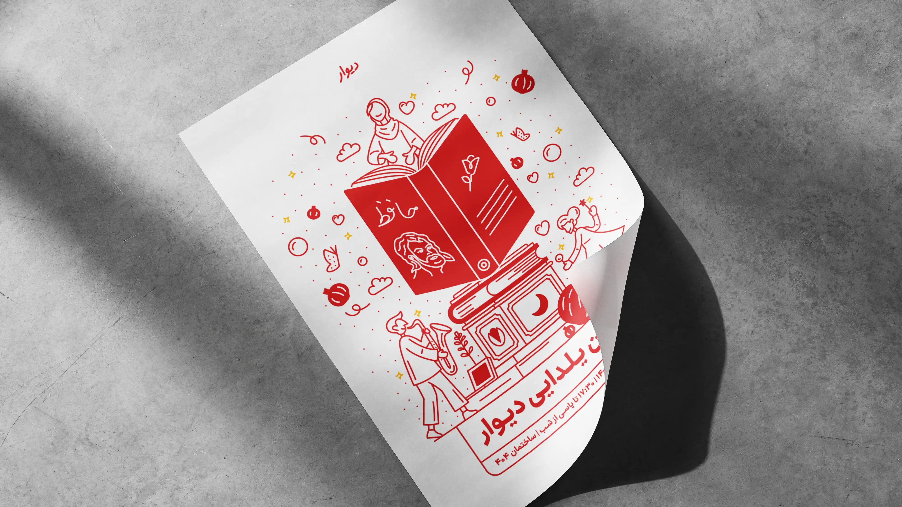
DIVAR'S YALDA 2024 — Divar, 2024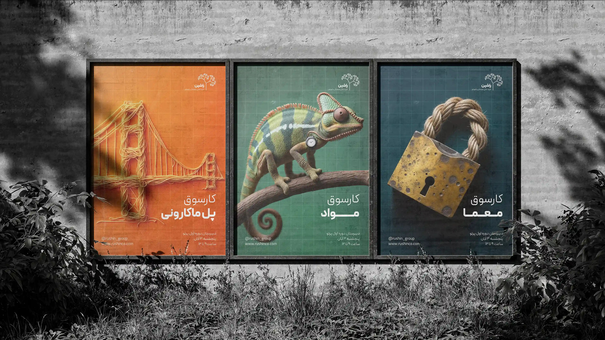
RUSHIN WORKSHOPS — Rushin, 2024
SPATIAL — 3D & XR
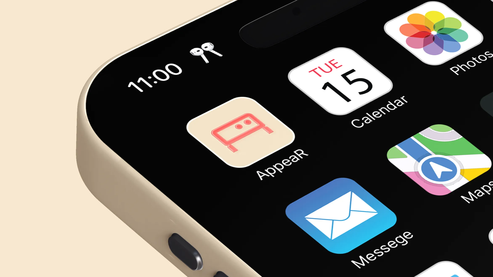
APPEAR — Children's Capital of Culture, 2025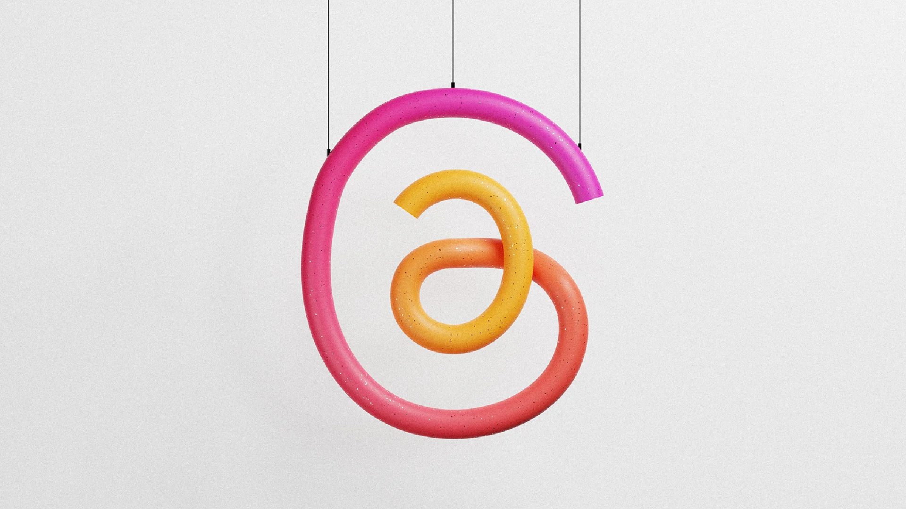
3D THREADS LOGO — Self-initiated, 2023
MOTION — TIME & SEQUENCE
- GRAVITAS+ — Gravitas+, 2026
- RUSHIN — Rushin, 2024
Clients
- Divar
- Nodet
- Snapp Group
- Tardid Virtual Philosophy School
- Tehran University
Contact
Curriculum vitae (PDF)
Enable JavaScript for the interactive version of this site.